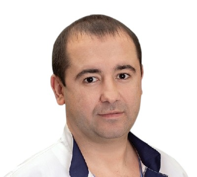
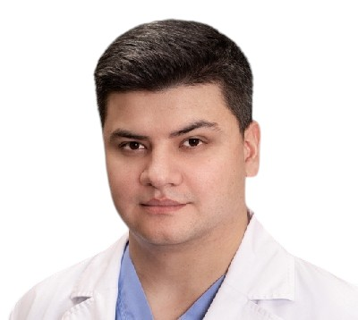
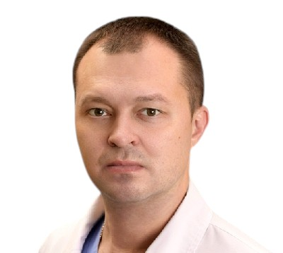
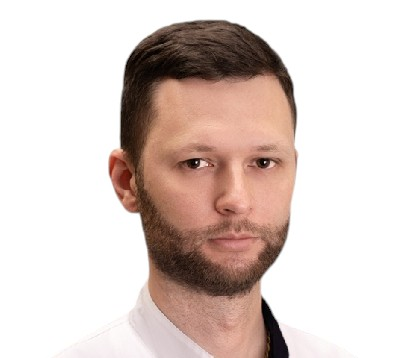
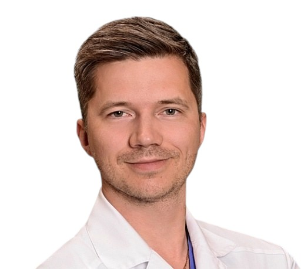
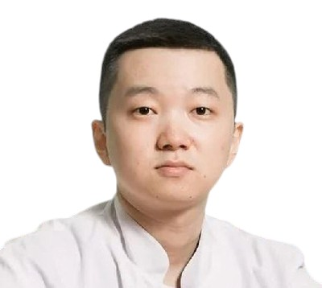

ДПО
Дополнительное профессиональное образование (ДПО) — официальные циклы повышения квалификации для врачей-урологов. Обучение на базе Городского центра эндоскопической урологии с удостоверением установленного образца и баллами НМО.
Для кого
Страница для врачей: язык профессиональный, формат — официальные циклы повышения квалификации
Врачи-урологи
Практикующие врачи-урологи и онкоурологи, осваивающие эндоскопические и лапароскопические технологии или углубляющиеся в отдельные направления оперативной урологии.
Ординаторы и молодые специалисты
Врачи-ординаторы и молодые специалисты по урологии, проходящие подготовку под руководством практикующих наставников центра.
Практикующие хирурги
Хирурги-урологи, желающие систематизировать технику лапароскопических и эндоскопических операций и подтвердить квалификацию.
Что вы получаете
Официальный статус и документы по итогам обучения
Удостоверение установленного образца
Удостоверение о повышении квалификации установленного образца — у больницы есть образовательная лицензия.
Баллы НМО
Программы аккредитованы в системе непрерывного медицинского образования — баллы НМО зачитываются для аккредитации специалиста.
Практика на реальной базе
Обучение у практикующих хирургов на действующей хирургической базе многопрофильного стационара — теория сразу подкрепляется операционной.
Программы
Циклы повышения квалификации по ключевым направлениям современной урологии
Лапароскопическая резекция почки с использованием технологии визуализации 3D и 4К
Флагманский курс центра по лапароскопической хирургии почки:
- планирование операции с использованием 3D-визуализации;
- лапароскопическая анатомия и этапы резекции почки;
- работа с системами визуализации 3D и 4К в операционной;
- профилактика и коррекция осложнений.
Нейроурология и уродинамика
Цикл по функциональной урологии:
- уродинамическая диагностика: методика и интерпретация;
- неврогенные нарушения мочеиспускания;
- современные подходы к лечению пациентов с нейроурологическими расстройствами.
Формат — официальные циклы повышения квалификации объёмом 18 / 36 / 72 / 144 академических часа с удостоверением и баллами НМО. Полный перечень курсов и стоимость каждого курса — в прейскуранте услуг. Даты ближайших потоков и периодичность уточняйте у отдела ДПО при подаче заявки.
Документ будет доступен для скачивания в ближайшее время.
Форматы обучения
Теория подкрепляется работой в операционной
Теория + живая хирургия
Лекции и наблюдение за реальными операциями в операционном блоке центра.
Разбор клинических случаев
Разбор сложных клинических случаев и индивидуальные консультации с преподавателями.
Очный формат
Обучение проходит очно на базе центра — только так можно увидеть живую хирургию и задать вопросы преподавателям напрямую.
Преподаватели
Обучение ведут практикующие хирурги-урологи центра

Попов Сергей Валерьевич
Руководитель центра
Главный внештатный специалист по урологии, руководитель Городского центра эндоскопической урологии и новых технологий.

Гусейнов Руслан Гусейнович
Руководитель отдела ДПО
Заместитель главного врача по научной деятельности, кандидат медицинских наук.

Топузов Тимур Марленович
Зав. отделением урологии №1
Практикующий хирург-уролог, стаж 20 лет.

Вязовцев Павел Вячеславович
Зав. онкоурологическим отделением
Врач-уролог, онколог, кандидат медицинских наук.

Чернов Кирилл Евгеньевич
Зав. урологическим отделением №2
Врач-уролог, онколог, кандидат медицинских наук.

Винцковский Станислав Геннадьевич
Врач-уролог
Зав. отделением рентгенохирургических методов диагностики и лечения (РХМДиЛ).

Цой Алексей Валерьевич
Врач-уролог, к.м.н.
Практикующий хирург-уролог, кандидат медицинских наук.
Об обучении — в нашем Телеграм
Новости о курсах, преподавателях и отделе ДПО из нашего канала
Новость об обучении в центре
Читать в Телеграм → КурсЛапароскопический курс 3D и 4К
Читать в Телеграм → КурсНейроурология и уродинамика
Читать в Телеграм → Отдел ДПОИнформация об отделе ДПО
Читать в Телеграм → НовостьНовость об обучении: потоки и даты
Читать в Телеграм → НовостьНовость об обучении: как проходят циклы
Читать в Телеграм → ПреподавателиВязовцев П.В. — о работе и обучении
Читать в Телеграм → ПреподавателиТопузов Т.М. — о работе и обучении
Читать в Телеграм → ПреподавателиВинцковский С.Г. — о работе и обучении
Читать в Телеграм → ПреподавателиЧернов К.Е. — о работе и обучении
Читать в Телеграм →Как попасть на обучение
Пять шагов от заявки до удостоверения
Заявка через форму
Заполните форму для врачей на этой странице — укажите специальность и интересующую программу.
Подбор программы и дат
Отдел ДПО свяжется с вами, подберёт цикл и даты ближайшего потока.
Договор и оплата
Заключаем договор на образовательные услуги, согласуем план обучения.
Обучение
Лекции, разбор клинических случаев, наблюдение за реальными операциями в операционном блоке.
Выдача документов
Удостоверение о повышении квалификации установленного образца и баллы НМО.
Заявка на обучение
Форма для врачей. Отдел ДПО свяжется с вами, чтобы подобрать программу и даты.
Организация и контакты
Отдел ДПО
Частые вопросы
Коротко о документах, стоимости и практике